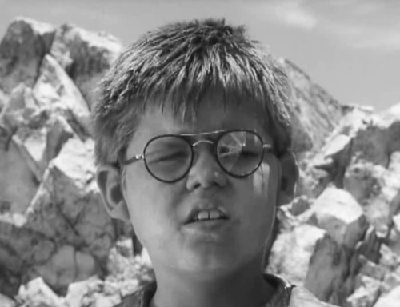

He is the first person that Ralph meets on the island. He is a fat boy with glasses, and his size is the cause of his nickname. He tells this name to Ralph, but says he would rather be called anything else than this name and asks Ralph to never tell it to the other boys. Going against what he had said, Ralph shares the mean nickname with the other boys at the first meeting, and this is what he is called throughout the book. He is often rejected by other boys in the novel due to his differences, including his greater weight, his asthma, and his need to wear glasses. Even though he is often not treated that well by Ralph, he still remains friends with him, and he is one of the few boys who stay with Ralph when many of the other boys join Jack’s tribe. His glasses were also very important to the boys on the island because they were used to create fire. Towards the end of the book, Jack came in the night to steal his glasses. When he went with Ralph to confront Jack about this, he ended up getting killed by Jack in the dispute. He was the most sensible and civil one out of all the boys on the island, and his death represents how all the sensibility and civilization had gone from the island.